Para quem nunca jogou1 a 6 jogadores60 min10+Manual oficial em inglês (Days of Wonder)
· Redação Elite Boardgamers
Resumo em 1 minuto
Você escolhe a marcha, joga cartas que somam a velocidade do carro e paga calor do motor quando passa rápido demais nas curvas; vence quem cruzar primeiro a linha de chegada.
A marcha diz quantas cartas você joga; a soma delas é a velocidade, e o carro anda exatamente esse número de casas.
Passar uma curva acima do limite custa uma carta de calor do motor por ponto de excesso; sem calor, o carro roda e cai para a 1ª marcha.
Resfriamento, turbo, vácuo e adrenalina ajudam a controlar o calor e ganhar posição; vence quem cruzar primeiro a chegada depois das voltas.
Como você aprende: 3 etapas, da mesa montada à contagem de pontosLeitura do essencial: cerca de 7 min
À vista, só o essencial para jogar. O que abre com + é explicação, exemplo, exercício ou regra de caso especial: abra quando precisar.
Montar a mesa passo a passo
Esta seção segue a preparação do manual p. 3, na mesma ordem. Ela vale para as primeiras partidas, com as regras básicas: o resto da caixa fica guardado por enquanto p. 2.
Componentes usados na partida
Peça
Quantidade na caixa
Para quê
Tabuleiro dupla face
2, com 4 pistas (EUA, França, Grã-Bretanha e Itália)
A pista da corrida p. 2
Painel do jogador
6, um por cor
Câmbio, motor, baralho e descarte de cada piloto p. 3 e 5
Carro
6, um por cor
Sua posição na pista p. 2
Pino de marcha
6, um por cor
Marca a marcha em que você está p. 2
Cartas básicas
72, 12 por cor: três de cada valor, 1, 2, 3 e 4
A velocidade do carro; têm o símbolo de velocímetro p. 2
Cartas de melhoria inicial
18, 3 por cor: uma de 0, uma de 5 e uma de calor
Entram no baralho de todos nas primeiras partidas p. 2 e 7
Cartas de estresse
37
Distração do piloto: viram uma carta ao acaso p. 2 e 5
Cartas de calor
48
O desgaste do motor p. 2 e 7
O que muda com o número de jogadores
Carros na corrida
O que muda
Até 4
A adrenalina vale só para o último carro de cada rodada p. 5
5 ou 6
A adrenalina vale para os dois últimos carros p. 5
Qualquer número
Só os carros que correm vão para o grid; o resto da preparação é igual para todos p. 3
O livreto de regras básicas não traz partida solo. Jogar sozinho, ou completar a mesa com pilotos automáticos, usa o módulo Lendas, explicado no outro livreto da caixa, de regras avançadas (livreto avançado, p. 1).
Passo a passo
Ponha o tabuleiro no meio da mesa. Na primeira partida, use a pista dos EUA. O manual sugere correr só 1 volta, para aprender, em vez das 2 impressas no tabuleiro p. 3.
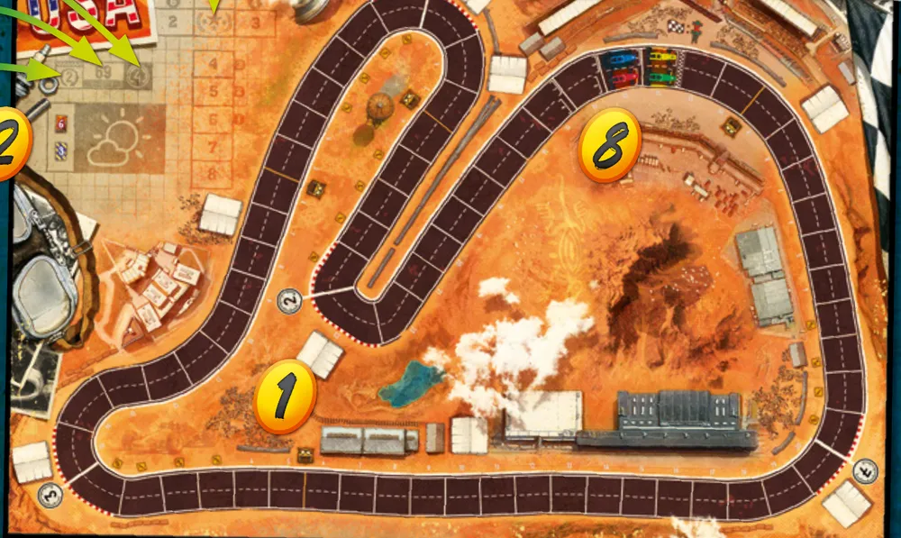
O tabuleiro com a pista dos EUA. O 1 marca o tabuleiro; o 8 marca o grid de largada, com os carros enfileirados antes da linha de chegada. Ilustração: manual oficial Days of Wonder p. 3
Cada jogador escolhe uma cor e pega o carro, o painel, o pino de marcha e as 12 cartas básicas dessa cor, mais as 3 cartas de melhoria inicial da mesma cor p. 3.
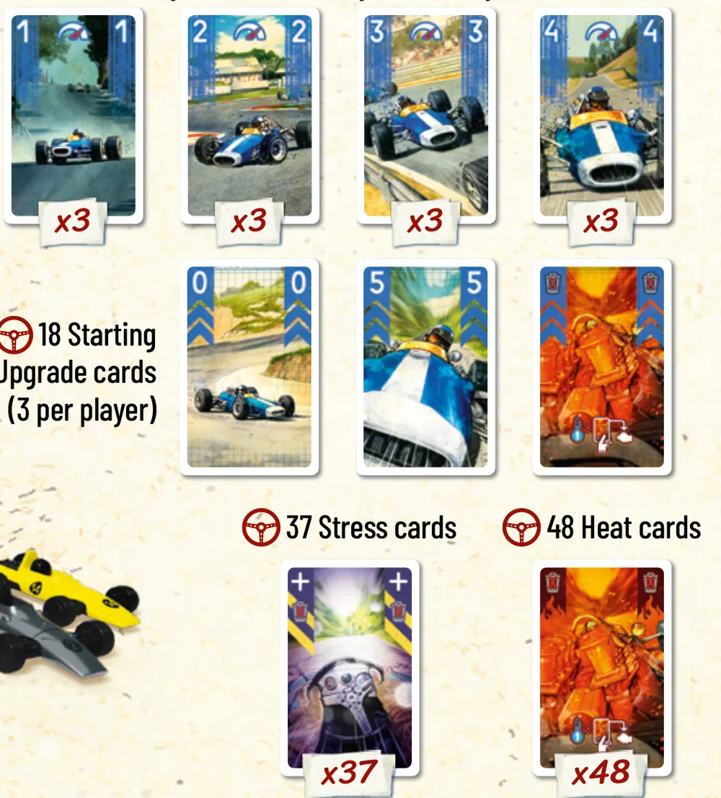
As cartas de cada piloto: na fila de cima, as básicas de valor 1 a 4 (três de cada); na do meio, as três melhorias iniciais (0, 5 e uma de calor, com o fundo de divisas); embaixo, uma carta de estresse e uma de calor. Os rótulos em inglês dizem "18 cartas de melhoria inicial (3 por jogador)", "37 cartas de estresse" e "48 cartas de calor". Ilustração: manual oficial Days of Wonder p. 2
Leia no tabuleiro quantas cartas de calor e de estresse cada carro recebe. Em geral são 6 de calor e 3 de estresse, e o manual usa esses números no resto da preparação p. 3. Na pista dos EUA são 6 e 3; nas outras, use os números do quadro de cada pista. No mesmo quadro estão as curvas por volta, as casas por volta e o número de voltas da corrida, e ao lado fica o Hall da Fama, a coluna onde os carros que terminam a corrida são postos em ordem p. 3 e 7.
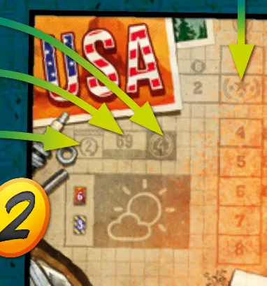
O quadro da pista dos EUA. As setas apontam o número de voltas (2), as casas por volta (69) e as curvas por volta (4); embaixo, os ícones mostram 6 cartas de calor e 3 de estresse por carro. A seta da direita aponta o Hall da Fama, a coluna numerada onde os carros que chegam são postos em ordem. Ilustração: manual oficial Days of Wonder p. 3
Monte o baralho. Ponha o painel à sua frente. Embaralhe as 12 cartas básicas, as 3 de melhoria inicial e 3 cartas de estresse: são 18 cartas. O baralho fica virado para baixo no espaço da esquerda do painel p. 3.
Encha o motor. Ponha 6 cartas de calor viradas para cima no espaço do motor, no meio do painel p. 3.
Ponha o pino de marcha na 1ª marchap. 3.
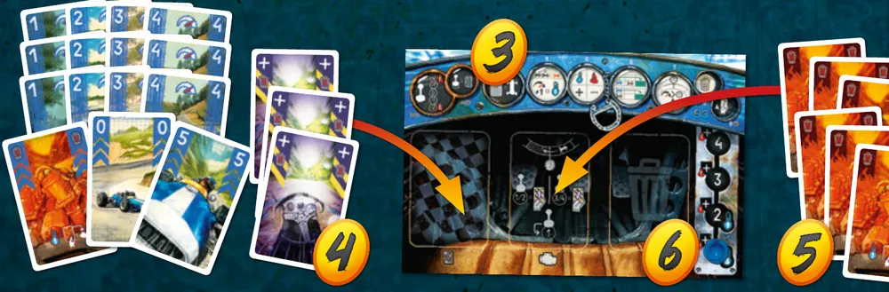
Do baralho ao painel: as cartas básicas, as melhorias e as cartas de estresse viram o baralho (4), no espaço da esquerda do painel (3); as 6 cartas de calor vão para o motor, no meio (5); o pino fica na 1ª marcha, à direita (6). Ilustração: manual oficial Days of Wonder p. 3
Monte a reserva de estresse. As cartas de estresse que sobraram ficam viradas para cima perto do tabuleiro p. 3.
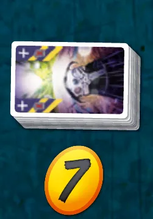
A reserva de cartas de estresse (7), ao lado do tabuleiro. Ilustração: manual oficial Days of Wonder p. 3
Sorteie o grid de largada. Ponha os carros participantes no grid ao acaso, um de cada vez, ocupando as posições em ordem crescente. Essa ordem vale só para a primeira rodada p. 3; depois, cada rodada começa pelo carro que estiver mais à frente na pista p. 4. O primeiro carro sorteado fica na posição 1, a da frente, e joga primeiro p. 3 e 4.
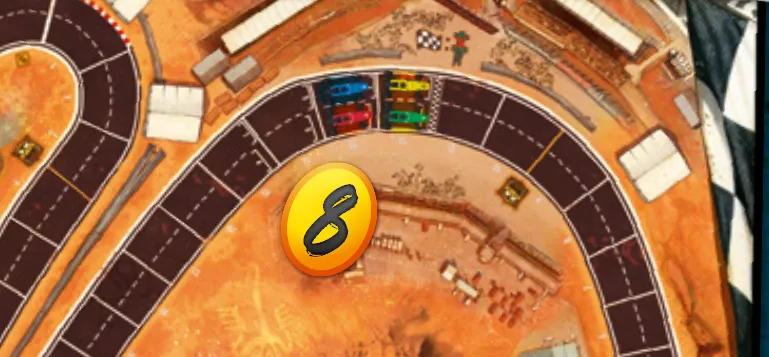
O grid de largada (8), no alto da pista: os carros enfileirados. Ilustração: manual oficial Days of Wonder p. 3
Compre 7 cartas do seu baralho. São as cartas que você tem para a primeira rodada p. 3.
O que volta para a caixa. Ficam guardados as cores que ninguém usa, as cartas de calor que não entraram nos carros e todo o material dos módulos avançados, que o manual deixa para depois p. 2. O manual não usa uma reserva de calor nas regras básicas; guardar o calor que sobra é a leitura deste guia.
Quem começa. Não há primeiro jogador: a primeira rodada segue a ordem do grid, do carro da frente para trás p. 3 e 4.
Antes de começar, confira: cada painel com 18 cartas viradas para baixo à esquerda (antes de comprar), 6 cartas de calor no motor e o pino na 1ª marcha; a reserva de estresse ao lado do tabuleiro; os carros no grid em ordem sorteada; 7 cartas na mão de cada jogador.
Quantas cartas tem o baralho de cada jogador logo depois da montagem, antes de comprar a mão?
São 18. As 6 cartas de calor vão para o motor, não para o baralho, e só as 3 de estresse do carro entram nele; o resto do estresse forma a reserva p. 3.
Comece a jogar em 4 minutos
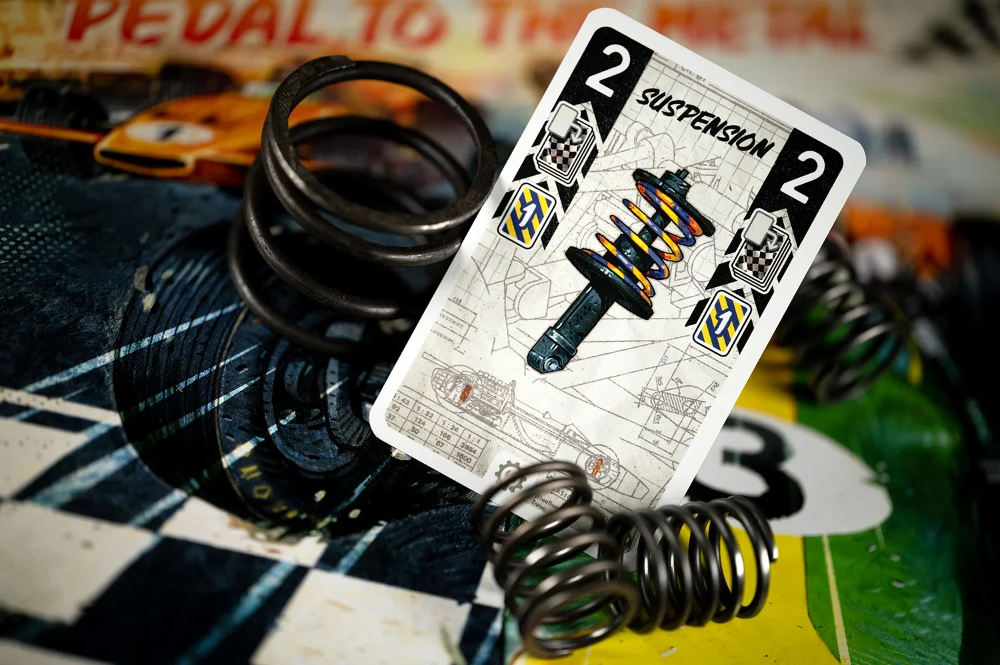
Imagem: Days of Wonder
Meta: em 4 minutos de leitura, montar a mesa e jogar a primeira rodada sem abrir o manual.
A ideia do jogo
Cada jogador pilota um carro e tenta ser o primeiro a cruzar a linha de chegada depois das voltas indicadas no tabuleiro. A marcha diz quantas cartas você joga na rodada; a soma delas é a sua velocidade, e o carro anda exatamente esse número de casas. Cada curva tem um limite de velocidade: passar dele custa cartas de calor, que saem do seu motor. Sem calor para pagar, o carro roda p. 3, 6 e 7.
Monte a mesa
A montagem completa, com figuras, está em Montar a mesa passo a passo, no alto da página. O essencial:
Pista dos EUA; na primeira partida, 1 volta p. 3.
Baralho de 18 cartas (12 básicas, 3 melhorias iniciais, 3 de estresse) virado para baixo; 6 de calor no motor; pino na 1ª marcha p. 3.
Carros no grid em ordem sorteada; 7 cartas na mão p. 3.
Seu primeiro turno
Todos trocam de marcha ao mesmo tempo. Fique onde está, ou suba ou desça uma marcha p. 4.
Todos jogam cartas viradas para baixo, tantas quanto a marcha: 1 na 1ª, 4 na 4ª. Carta de calor não pode ser jogada p. 4.
Do carro da frente para trás, um de cada vez: revele as cartas, some e ande exatamente esse número de casas p. 4 e 5.
Se passou por uma curva, compare a velocidade com o limite. Acima dele, pague a diferença em calor, do motor para o descarte p. 6.
Ponha as cartas jogadas no descarte e compre até ter 7 na mão. Aí joga o carro seguinte p. 6.
Ainda não precisa saber
Rodar na curva: etapa 2. Estresse, resfriamento, turbo, vácuo e adrenalina: etapas 1 e 3. Fim da corrida: etapa 3.
Como a partida acaba
Vence quem cruzar primeiro a linha de chegada depois das voltas indicadas. Se dois ou mais cruzam na mesma rodada, vence o carro mais à frente p. 7.
Prefere ver? Partida resumida do canal Duque Board Games. Ele complementa este guia; em caso de diferença, vale o manual.
HEAT: Pedal to the Metal | Gameplay resumida, canal Duque Board Games · abrir no YouTube
0Antes de tudo: o que é este jogoOpcional
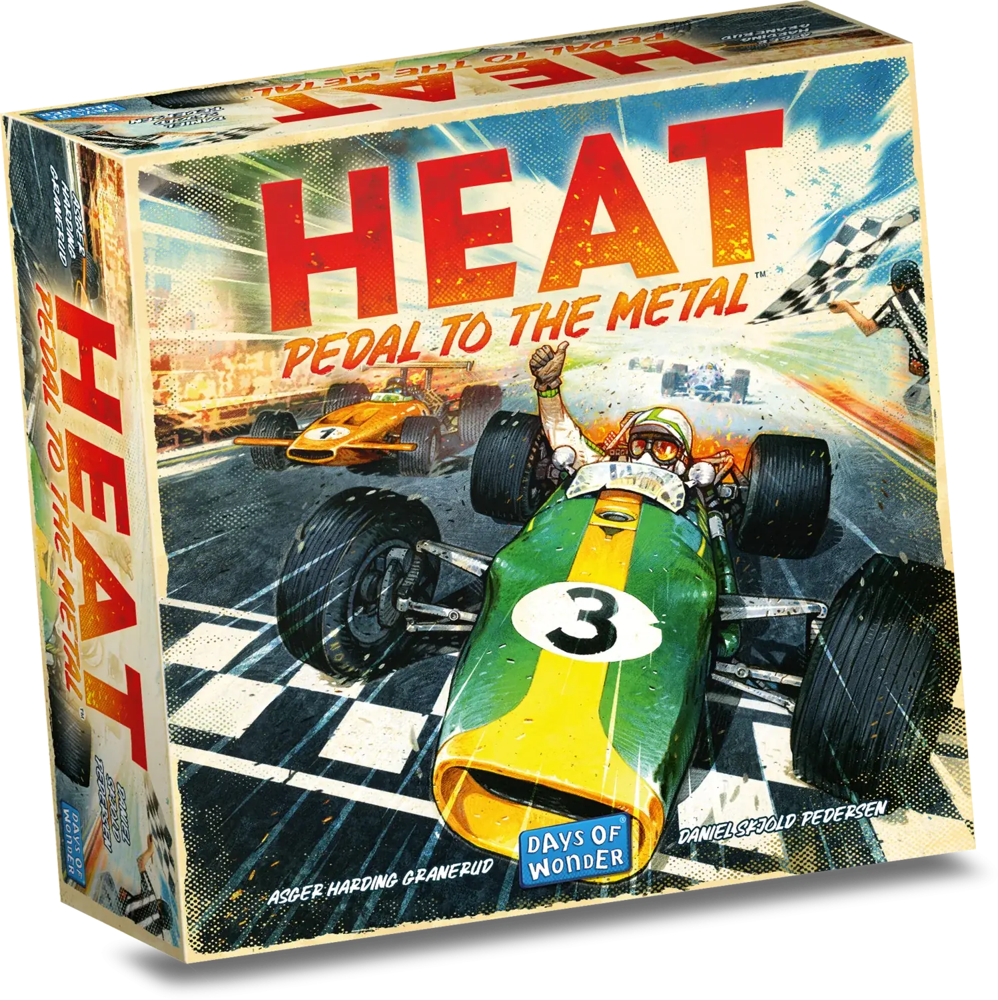
Imagem: Days of WonderAbrir esta seção
Heat é um jogo de corrida de carros com cartas. Ninguém rola dado para andar: você escolhe a marcha, escolhe as cartas e em geral sabe, antes de revelar, quantas casas vai andar. O acaso está no baralho, que decide que cartas chegam à mão, e nas cartas de estresse (p. 3 a 5).
O motor é o seu orçamento. Ele começa com 6 cartas de calor. Cada vez que você força o carro (passa rápido demais numa curva, usa o turbo, pula duas marchas), uma ou mais cartas de calor saem do motor e vão para a pilha de descarte. Dali, mais tarde, ela é embaralhada de volta e chega à sua mão, onde não serve para nada e ocupa espaço. Para devolvê-la ao motor, é preciso resfriar, em geral andando nas marchas baixas p. 7.
Duas ideias sustentam o resto:
Velocidade é a soma das cartas. É ela que move o carro e é ela que a curva confere p. 5 e 6.
Calor é tempo emprestado. Gastar calor agora é ganhar posição; ficar sem calor numa curva rápida é rodar p. 6 e 7.
1Como este guia ensinaOpcional
Imagem: Days of WonderAbrir esta seção
O guia tem três etapas, cada uma uma parte real da corrida: andar na reta, passar pelas curvas e usar os recursos da fase de reação até a linha de chegada. Em cada etapa vêm Para entender (como funciona e por quê), Passo a passo (as regras exatas), um exemplo resolvido, uma tarefa para completar, uma sua vez, sem ajuda, e às vezes um treino rápido. Regras que só aparecem em algumas rodadas ficam em blocos de regra adicional, logo depois do passo a passo. Em cada pergunta, escolha uma opção para ver a resposta certa e a explicação. No final, uma avaliação curta diz o que reler, e uma folha de consulta vai para a mesa.
2Etapa 1: a rodada e a reta
Por que funciona assim
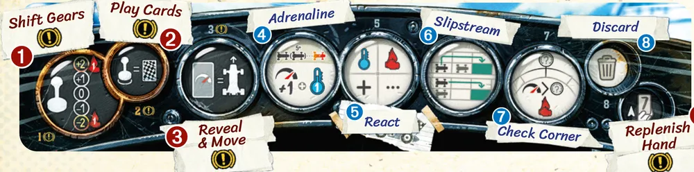
A sequência da rodada no alto do painel: 1 trocar de marcha, 2 jogar cartas, 3 revelar e mover, 4 adrenalina, 5 reagir, 6 vácuo, 7 conferir curva, 8 descartar, 9 completar a mão. Os passos obrigatórios têm o sinal de exclamação. Ilustração: manual oficial Days of Wonder p. 4
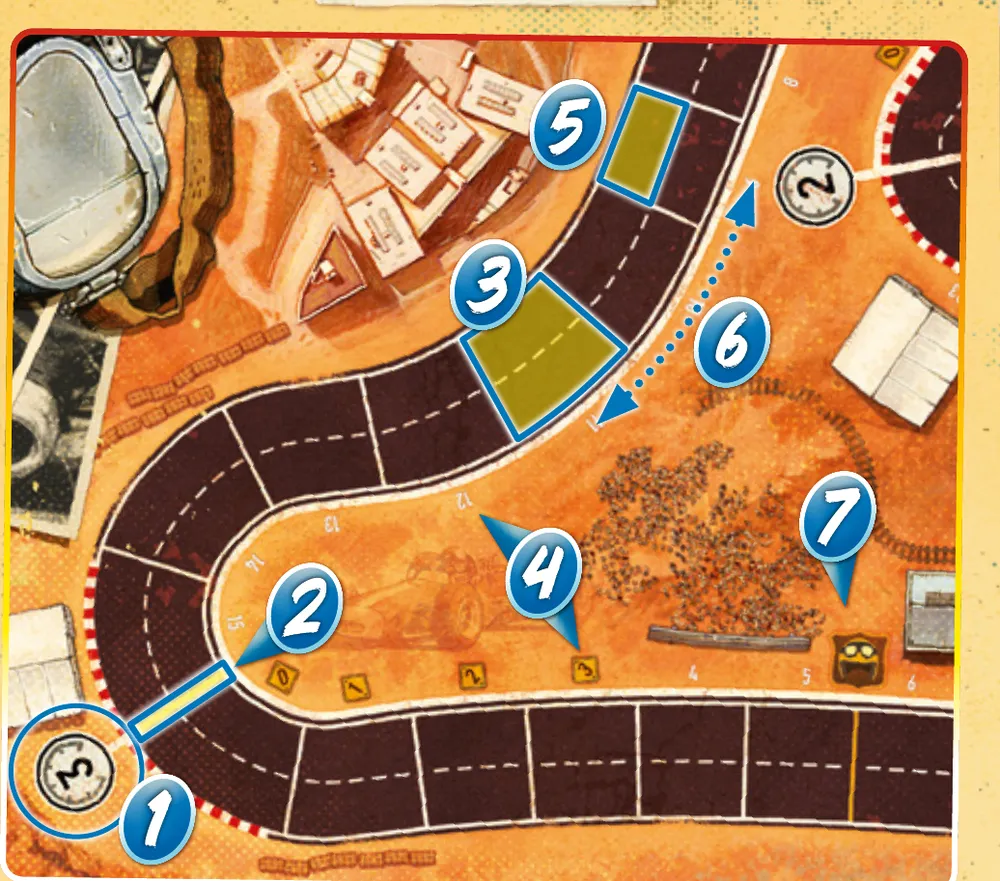
Um trecho de pista: 1 é o limite de velocidade da curva; 2, a linha de curva; 3, uma casa; 4, o marcador de casas até a próxima curva; 5, uma vaga; 6, a linha de corrida; 7, a linha das Lendas, usada só nas regras avançadas. Ilustração: manual oficial Days of Wonder p. 4Regra adicional: Carros no caminhoRegra adicional: Carros lado a ladoRegra adicional: Cartas de estresseRegra adicional: Melhorias iniciaisRegra adicional: Baralho vazio
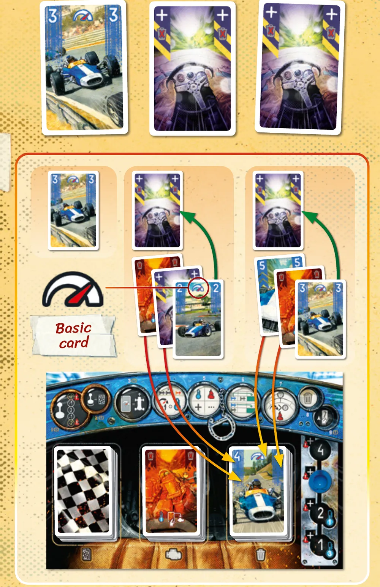
O exemplo do manual: as cartas reveladas são um 3 e dois estresses. Para o primeiro estresse saem uma carta de calor e uma de estresse, descartadas, e depois um 2; para o segundo saem a melhoria de 5 e uma carta de calor, descartadas, e depois um 3. Descartadas: 2 de calor, 1 de estresse e 1 melhoria. Velocidade 3 + 2 + 3 = 8. Ilustração: manual oficial Days of Wonder p. 5Ver um exemplo resolvidoPratique esta etapa: exercícios com respostas
3Etapa 2: as curvas e o calor
Imagem: Days of WonderPor que funciona assimRegra adicional: Pular duas marchasRegra adicional: Mão entupidaVer um exemplo resolvidoVer um exemplo resolvidoDicaPratique esta etapa: exercícios com respostas
4Etapa 3: reagir, pegar vácuo e cruzar a chegada
Imagem: Days of WonderPor que funciona assimRegra adicional: Pagar 1 calorRegra adicional: Descarte fechadoSobre a ediçãoVer um exemplo resolvidoVer um exemplo resolvido
Cruzar a chegada
Sobre a edição: Contar as voltasRegra adicional: Vácuo na chegadaRegra adicional: Adrenalina no fimPratique esta etapa: exercícios com respostas
5Situações especiaisOpcional
Imagem: Days of WonderAbrir esta seçãoRegra adicional: Estresse virando estresseRegra adicional: Correr com os módulosSobre a edição
6Avaliação finalOpcional
Imagem: Days of WonderAbrir esta seção
Responda sem consultar. Cada resposta diz o que reler.
1. Na 2ª marcha, quantas cartas você joga?
Exatamente duas, nunca de calor p. 4. Releia a etapa 1.
2. Você revelou velocidade 6, mas preferia andar 5 para não cruzar uma curva. Pode?
Não. O movimento é exatamente a velocidade p. 5. Releia a etapa 1.
3. Na 2ª marcha, velocidade 7 numa curva de limite 4, com 2 de calor no motor. O que acontece?
Roda. Excesso de 3 com só 2 no motor; na 2ª marcha o rodopio dá 1 estresse p. 6. Releia a etapa 2.
4. Velocidade 5, vácuo de 2 casas cruzando uma curva de limite 6. Quanto paga?
Nada. O vácuo não entra na velocidade conferida p. 6. Releia a etapa 3.
5. Você tem 2 cartas de estresse e 1 de calor na mão e não quer nenhuma delas. Pode descartá-las?
Nenhuma. Estresse e calor não podem ser descartados (p. 5 a 7). Releia a etapa 3.
6. Numa corrida de 6 carros, quem recebe a adrenalina?
Os dois últimos, com 5 carros ou mais p. 5. Releia a etapa 3.
7Para consultar durante a partida
Imagem: Days of Wonder
Preparação: pista dos EUA, 1 volta na primeira partida. Baralho de 18 cartas (12 básicas, 3 melhorias iniciais, 3 estresses); 6 de calor no motor; pino na 1ª marcha; reserva de estresse ao lado; grid sorteado; 7 cartas na mão.
A rodada
Trocar de marcha (todos juntos): fica, sobe ou desce uma; duas custam 1 calor.
Jogar cartas (todos juntos): tantas quanto a marcha, viradas para baixo; nunca calor.
Do carro da frente para trás, cada um: revelar e mover exatamente a soma. Símbolo +: vire até sair uma básica.
Adrenalina: último carro (dois últimos com 5 ou mais): +1 casa e +1 de velocidade, e/ou +1 resfriamento.
Reagir, em qualquer ordem: resfriamento (1ª marcha 3, 2ª marcha 1, 3ª e 4ª nenhum), turbo em qualquer marcha (1 calor, um +, uma vez por turno).
Vácuo: ao lado ou logo atrás de um carro, +2 casas; não conta na curva; nunca na chegada.
Conferir curva: velocidade (cartas, + do turbo, +1 da adrenalina) acima do limite paga a diferença em calor; cada curva em separado.
Descartar o que quiser, menos estresse e calor.
Área de jogo no descarte; comprar até 7.
Rodar: paga todo o calor que tem; volta para antes da linha da curva; 1 estresse (1ª ou 2ª marcha) ou 2 (3ª ou 4ª); pino na 1ª.
Mão entupida: faltou carta jogável, complete com calor; o carro não anda, pino na 1ª, cartas no descarte, vá ao passo 9.
Bloqueio: casa cheia, fique na primeira casa com vaga livre atrás.
Fim: primeiro a cruzar a chegada depois das voltas; mesma rodada, vence o mais à frente. Depois da chegada, sem limite de curva.
O manual da edição brasileira (Galápagos, HET001) aparece na biblioteca de downloads da Asmodee Brasil, mas o arquivo público não estava disponível em 05/11/2026. Não foram encontrados FAQ nem errata oficiais.